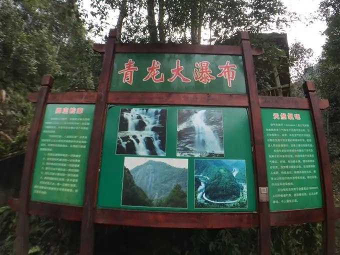
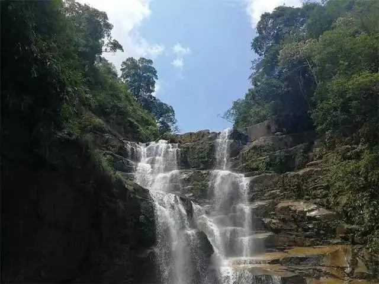
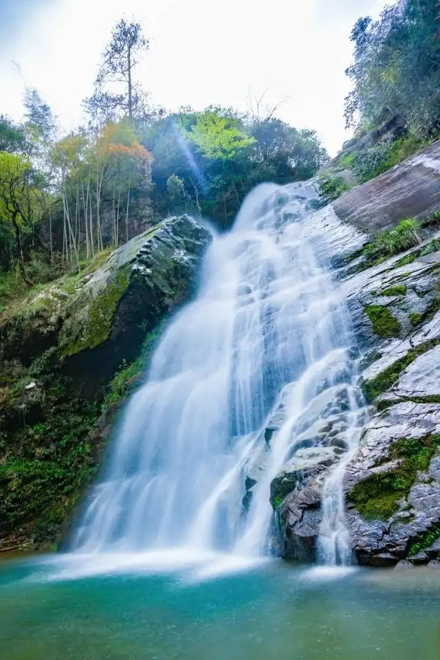
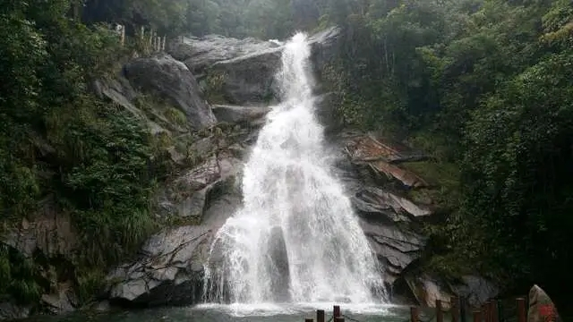

青龙大瀑布
国家4A级旅游景区
开放时间：8:00-20:00

青龙大瀑布位于武夷山大峡谷生态公园西侧，距主景区30千米，距大峡谷生态漂流码头2千米，瀑布周围森木茂密，水源十分丰富，深谷绝壁上，一道大瀑布飞流而下，直泻深谷，长200多米，落差120多米，最宽处40余米。

当您来到青龙大瀑布景区时，真切地让人感受到无法抗拒的大自然魅力，只风奔腾的“通天河”水，犹如一条青龙银状从峡谷间呼啸而出，群瀑冲下一潭又一潭的深流，排风带势，澎湃咆哮，激浪翻腾，飞珠溅飞，激起阵阵轰鸣雷动，百米之外水气蒙蒙远眺仿佛素练悬空，银龙飞舞，最后盘旋在赤壁峡谷间，右冲左突汇入桐木溪。

青龙大瀑布高120米，宽40米共有3级呈阶梯状，瀑布从崖顶腾空而起如同从天而降，让人很容易记起李白“飞流直下三千尺，疑是银河落九天”的诗句，瀑布气势磅礴，犹如千军万马，直捣深谷，水流过处，飞珠溅玉，雷鸣轰动。潭面瀑布撞击的水花如同千簇绽开的雪莲，壮观无比。

据了解，青龙大瀑布是目前福建省发现的最大瀑布。在华东地区，青龙大瀑布以其高度、宽度、水量组合成的截面，面积超过了著名的庐山香峰瀑布、黄山“人”字瀑，甚至超过了高约190米、宽约20米的雁荡山大龙湫瀑布，尤其是在枯水期，大龙湫只有水花飞溅，而青龙大瀑布依然奔腾依旧，是名符其实的“华东第一瀑”，武夷山的青龙大瀑布别具特色，不仅气势恢宏，而且周边峡谷幽静，植被繁茂，综合景观超过上述瀑布，如果称她是中国最美丽的瀑布之一，也不为不过。
开放时间：8:00—15：30
交通概况：武夷山景区—青龙大瀑布：S303—过南源岭村—右转进入S205—渡头街路—右转进入齐云大道—过马力后右转—行驶3.8KM—右转直行—终点